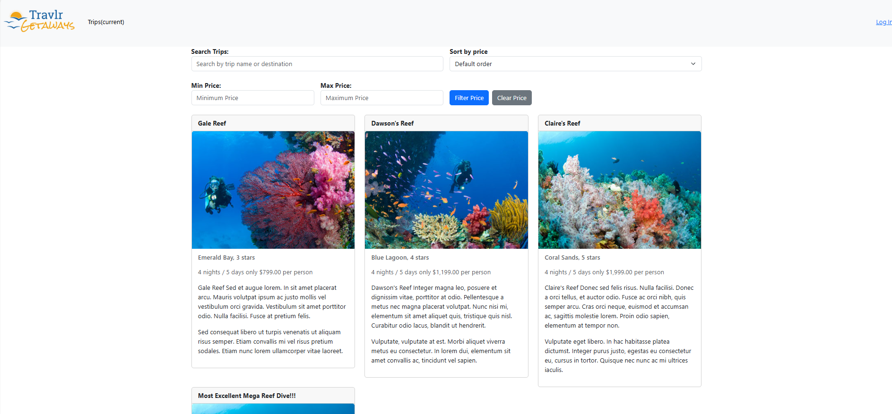
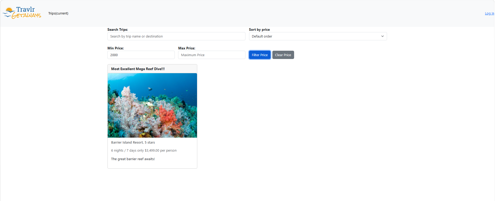
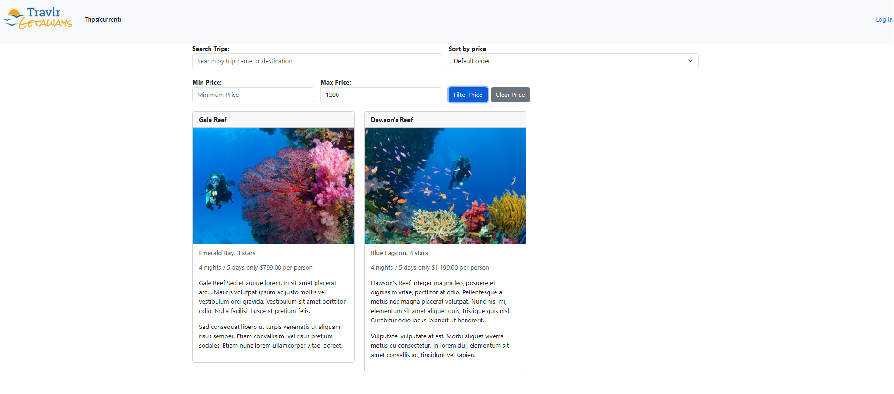
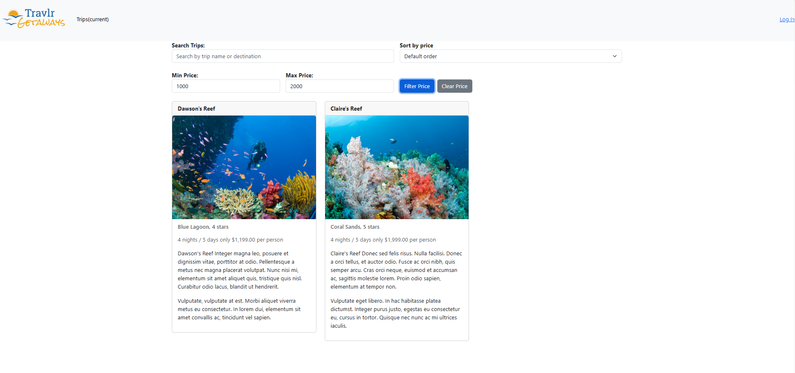
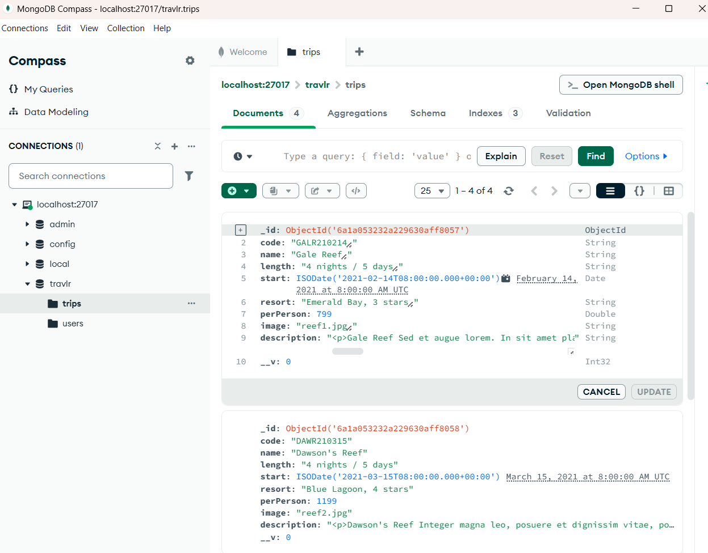

Databases
This enhancement focuses on improving database query functionality in the Travlr Getaways application by introducing server-side price-range filtering using MongoDB and Mongoose.
The original application retrieved travel packages without allowing users to restrict results to a specific price range. I enhanced the Express API to accept minimum and maximum price parameters and dynamically construct MongoDB queries based on those values.
The implementation uses MongoDB's $gte (greater than or equal to) and $lte (less than or equal to) comparison operators to filter travel packages using the numeric perPerson field. These queries allow the database to return only trips within the requested price range.
I also updated the Angular trip listing interface to include minimum and maximum price inputs and an Apply Filter button. This connects the client-side controls to the Express API and MongoDB database, demonstrating how the different layers of a full-stack application work together.
Enhancement 3 Narrative
Artifact Description
The artifact selected for this enhancement is Travlr Getaways, a full-stack travel application originally developed during CS-465. The application uses the MEAN stack (MongoDB, Express.js, Angular, and Node.js) to manage and display travel packages. For this enhancement, I focused on improving how the application retrieves trip data from its MongoDB database.
Justification for Inclusion
I included this artifact in my ePortfolio because it demonstrates my ability to design and implement database queries that support application functionality. I enhanced the Express API to accept minimum and maximum price parameters and used Mongoose to construct MongoDB queries that return travel packages within the requested price range.
The implementation uses MongoDB's $gte and $lte comparison operators with the numeric perPerson field. I also connected the Angular price-filtering controls to the API, allowing users to request filtered results directly from the database. This approach reduces unnecessary data retrieval and demonstrates communication between the client, server, and database.
Course Outcomes
This enhancement supports the course outcome focused on applying appropriate computing techniques, skills, and tools to develop solutions that accomplish practical goals. By implementing dynamic MongoDB queries and integrating them with the Express API and Angular interface, I demonstrated my ability to improve database operations within an existing full-stack application.
Reflection
Completing this enhancement strengthened my understanding of how data types and query conditions affect database results. One challenge was troubleshooting a problem where applying minimum and maximum price filters caused the displayed trips to disappear unexpectedly.
I addressed this issue by reviewing the price field's data type, validating the values received from the API, and refining the query logic. This experience reinforced the importance of consistent data types, defensive programming, and testing database queries with different input values.
Source Code and Enhancement
The links below provide access to the original Travlr Getaways application and the changes implemented for Enhancement 3.
Original Artifact
The original CS-465 application provides the foundation for the enhancements completed during my CS-499 capstone.
View Original ArtifactEnhancement 3: Databases
This enhancement introduces server-side price-range filtering using MongoDB and Mongoose. The Express API processes minimum and maximum price parameters and constructs database queries using the $gte and $lte comparison operators to retrieve matching travel packages.
View Enhancement 3 CodeTesting and Validation
Minimum Price Filtering
I tested the minimum price filter by entering a price threshold in the Angular interface and applying the filter. The Express API receives the minimum price as a query parameter and uses MongoDB's $gte operator to retrieve trips with per-person prices greater than or equal to the specified value.
Maximum Price Filtering
I also tested the maximum price filter to verify that the application could retrieve travel packages at or below a specified price. The API uses MongoDB's $lte operator to construct the query condition and return matching trips from the database.
Combined Price-Range Filtering
I tested the minimum and maximum price inputs together to verify that the database returned trips within the selected range. Both comparison operators are applied to the perPerson field, allowing MongoDB to evaluate the lower and upper price limits in a single query.
Debugging and Data Validation
During testing, I encountered an issue where applying both price filters caused the trip listings to disappear unexpectedly. I investigated the problem by reviewing the MongoDB data, the perPerson schema field, and the values passed through the Express API.
I refined the controller logic to convert the received price parameters into numbers before constructing the database query. I also incorporated error handling to provide appropriate HTTP responses when no matching trips are found or when a database operation fails.
Testing Results
After correcting the filtering logic, the application successfully retrieved travel packages within the requested price range. This confirmed that the Angular controls, Express API, Mongoose queries, and MongoDB database were communicating correctly.
Testing Screenshots
The following screenshots document the MongoDB price-range filtering functionality implemented during Enhancement 3.
Price-Range Filtering
These screenshots demonstrate how the Angular interface allows users to apply minimum and maximum price filters and retrieve matching travel packages.




Database and Query Verification
These screenshots demonstrate how MongoDB stores trip prices and how the Express API uses comparison operators to filter travel packages.
